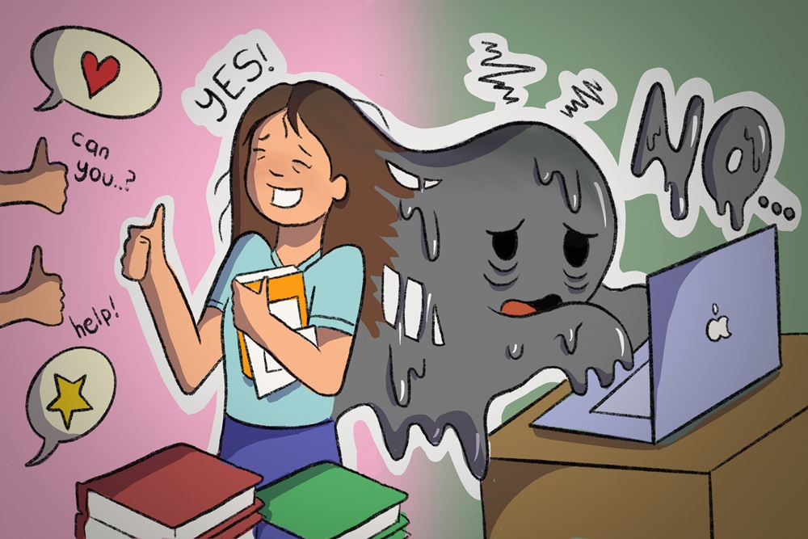

Stop Jadi "People Pleaser" Demi Kesehatan Mental
People pleaser adalah istilah untuk menyebut seseorang yang selalu berusaha menyenangkan dan memenuhi ekspektasi orang lain. Kondisi ini biasanya dipicu oleh berbagai fakta, mulai dari rasa tidak aman (insecurity) hingga trauma masa lalu.
Apa itu People Pleaser?
Seperti yang telah dijelaskan, people pleaser adalah sebutan untuk seseorang yang selalu berusaha untuk menyenangkan dan memenuhi ekspektasi orang-orang di sekitar. Perlu diketahui, people pleaser adalah kebiasaan yang bisa berdampak buruk pada kualitas hidup seseorang karena sering kali dilakukan dengan mengorbankan diri sendiri.
Penyebab Seseorang Menjadi People Pleaser?
Secara umum, alasan seseorang menjadi people pleaser adalah agar mereka disukai oleh banyak orang, merasa takut salah atau mengecewakan orang lain, atau mengikuti arus karena takut sendiri dan kesepian. Di samping itu, sejumlah faktor yang dapat menyebabkan seseorang menjadi people pleaser adalah sebagai berikut:
- Merasa tidak aman, ragu, dan cemas terhadap kemampuan diri sendiri (insecure).
- Trauma masa lalu, seperti pernah mendapatkan bullying, pelecehan seksual, atau memiliki keluarga yang tidak harmonis.
- Pola asuh orang tua yang salah.
Ciri-Ciri People Pleaser
Salah satu ciri-ciri yang sering terdapat pada orang dengan karakter people pleaser adalah sulit untuk menolak atau mengatakan tidak pada permintaan seseorang. Mereka akan berusaha keras untuk memenuhi keinginan atau permintaan orang lain dan tidak segan-segan untuk mengorbankan dirinya sendiri. Selain itu, sejumlah tanda-tanda lainnya yang bisa dikenali pada orang dengan karakter people pleaser adalah sebagai berikut:
- Merasa bertanggung jawab atas perasaan orang lain.
- Sering merendahkan diri sendiri.
- Sering mengabaikan pendapat pribadi dan setuju dengan pendapat orang lain untuk menghindari perdebatan.
- Meminta maaf atas hal-hal yang tidak perlu.
- Jarang meluangkan waktu untuk diri sendiri.
- Merasa takut dan khawatir jika ada orang yang marah.
- Menyalahkan diri sendiri.
- Tidak pernah mengakui perasaan sendiri, baik itu marah atau sedih.
- Selalu bersedia membantu orang lain, tapi cenderung sungkan atau menolak menerima bantuan.
- Membutuhkan pujian agar mereka merasa bahwa dirinya berharga.
Dampak Menjadi People Pleaser
Apabila dilakukan secara terus-menerus, sifat people pleaser dapat memengaruhi kualitas hidup dan kesehatan mental seseorang. Adapun sejumlah dampak buruk menjadi people pleaser adalah sebagai berikut:
- Stres dan Gangguan Cemas
Karena merasa bertanggung jawab dengan perasaan orang lain, orang dengan karakter people pleaser sering kali merasa cemas dan khawatir jika tidak bisa memenuhi keinginan orang-orang di sekitarnya. Hal inilah yang dapat memicu terjadinya stres berlebih hingga gangguan kecemasan.
- Kehilangan Jati Diri
Tak jarang dari orang dengan karakter people pleaser yang menyembunyikan pendapat, kebutuhan, dan preferensinya sendiri demi bisa menyenangkan orang lain. Kondisi ini bisa membuat mereka merasa tertekan hingga kehilangan jati diri. Selain itu, sebagian besar waktu dari orang dengan karakter people pleaser akan digunakan untuk memenuhi keinginan dan ekspektasi orang lain. Hal tersebut dapat membuat seseorang tidak memiliki waktu yang cukup untuk mengenali diri dan mengurus hidupnya sendiri. Akibatnya, mereka akan merasa kosong dan hampa hingga kehilangan semangat untuk maju dan berkembang.
- Gangguan Emosi Salah satu dampak buruk menjadi people pleaser adalah bisa memicu gangguan emosi. Pasalnya, menjadi people pleaser akan membuat seseorang cenderung memendam emosi dan amarahnya, terlebih jika ia merasa sedang dimanfaatkan oleh orang lain. Jika dibiarkan begitu saja, sifat pasif-agresif ini bisa menimbulkan berbagai macam gangguan emosi, seperti depresi hingga gangguan bipolar.
Cara Berhenti Menjadi People Pleaser
- Bersikap Lebih Tegas pada Diri Sendiri dan Orang Lain
Cara berhenti menjadi people pleaser yang pertama adalah dengan bersikap lebih tegas dan memberikan batasan yang jelas pada diri sendiri maupun orang lain. Jika dimintai bantuan oleh orang lain yang bisa merugikan diri sendiri, tidak ada salahnya untuk menolak permintaan tersebut dan menjelaskan alasannya sebaik mungkin. Perlu diingat, menolak permintaan orang lain karena tidak mampu membantu bukan berarti jahat dan tidak berempati. - Belajar Melupakan dan Menerima Masa Lalu
Seperti yang telah dijelaskan sebelumnya, sebagian orang dengan karakter people pleaser didasari oleh trauma yang terjadi di masa lalu. Oleh karenanya, untuk mengatasi hal tersebut, seseorang yang memiliki sifat people pleaser sebaiknya belajar untuk melupakan dan menerima masa lalu yang kerap membuat dirinya merasa tidak percaya diri. - Menjaga Keseimbangan dalam Hubungan Sosial
Pada suatu hubungan sosial, penting untuk memberikan ruang pada setiap individu agar bisa berkontribusi dan melakukan hal baik. Hal ini dilakukan untuk menjaga keseimbangan dan keharmonisan di dalam hubungan sosial yang kerap diabaikan oleh seorang people pleaser. - Berpikir Terlebih Dahulu Sebelum Melakukan Sesuatu untuk Orang Lain
Agar terhindar dari sifat people pleaser, sebaiknya, berpikirlah terlebih dahulu sebelum menyetujui melakukan suatu hal untuk memenuhi permintaan orang lain. Perhatikanlah terlebih dahulu apakah permintaan tersebut sengaja hanya ingin memanfaatkan Anda atau bukan. - Jangan Meminta Maaf Jika Tidak Perlu
Hindari mengucapkan kata maaf atas kesalahan yang tidak Anda lakukan. Selain untuk mencegah Anda menjadi seorang dengan sifat people pleaser, hal ini juga dapat melatih orang lain agar bisa lebih bertanggung jawab atas perbuatannya sendiri. - Memprioritaskan Kebahagiaan Diri Sendiri
Cara berhenti menjadi people pleaser berikutnya yaitu dengan memprioritaskan kebahagiaan dan mencintai diri sendiri (self-love). Hal ini bisa dilakukan dengan memberikan afirmasi positif dan meluangkan waktu untuk diri sendiri.
People pleaser adalah hal yang perlu segera dihentikan agar tidak memengaruhi kesehatan mental secara keseluruhan. Maka dari itu, jangan ragu untuk mengunjungi Siloam Hospitals terdekat terlebih jika Anda memiliki trauma psikis yang dapat memengaruhi perilaku ataupun aktivitas sehari-hari.Tak perlu menganggap gangguan mental adalah hal tabu yang harus disembunyikan. Gunakan fitur Telekonsultasi yang memungkinkan pasien untuk berkonsultasi langsung dengan dokter secara online dari mana saja dan kapan saja.Melalui fitur ini, dokter juga dapat meresepkan obat-obatan yang disesuaikan dengan kondisi pasien dan dapat diambil melalui self pick up. Mari jaga selalu kesehatan fisik dan mental #BersamaSiloam!